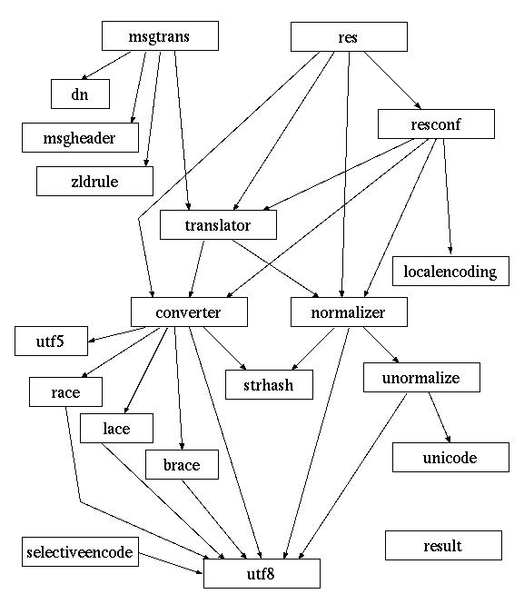
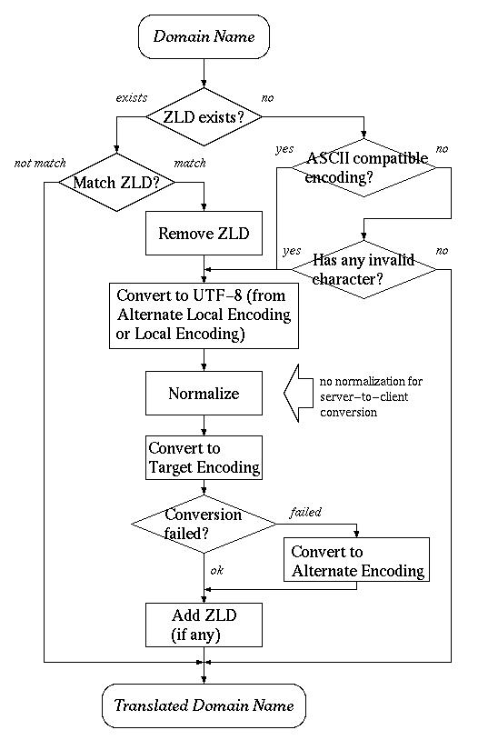

MDN ライブラリ (libmdn) は多言語ドメイン名の変換に関わる各種の処理を 実装するモジュールの集合です。このライブラリは以下のような機能を 提供します。
文字列のエンコーディングを変換し、その結果を返します。 MDN ライブラリの内部では、文字列はすべて UTF-8 エンコーディングであるとして 取り扱われます。そこで、このモジュールは
エンコーディングは大きく分けて、次の2種類があります。
このモジュールでは前者のエンコーディング変換のために iconv() ユーティリティを使用し、後者のエンコーディング変換のためには 独自の変換関数を実装して使用しています。
与えられた文字列を正規化します。標準では次にあげる正規化をサポートします。
DNS プロキシサーバ (dnsproxy) では、クライアントから送られてきた DNS メッセージに含まれるドメイン名に対してエンコーディング変換や正規化を行い、 その結果を DNS サーバに送ります。このために以下の機能を提供します。
多言語ドメイン名を識別するために ZLD を必要とする方式のために、ZLD に 関する以下の機能を提供します。
アプリケーションプログラムが使用しているローカルエンコーディング (コードセット) を自動判別します。判別は基本的にはアプリケーションのロケール 情報を利用しますが、環境変数で指定することも可能になっています。
アプリケーションにリンクされるリゾルバライブラリでエンコーディング 変換や正規化を行う場合、使用するエンコーディングや正規化方式は 設定ファイルに記述されます。このファイルを読み込む機能を提供します。
MDN ライブラリは以下のモジュールから構成されます。
以下にモジュールの呼び出し関係図を示します。ただしほとんどすべての モジュールから呼び出されている debug モジュールと log モジュール、また 共用関数を納めた util モジュールは 割愛してあります。

MDN ライブラリに含まれるすべてのモジュールについて、その仕様を記述 します。 まず各モジュールで共通に使用される、関数のリターン値について 説明したあと、モジュール毎に詳細を解説します。
MDNライブラリのほとんど全てのAPI関数は、リターン値として 列挙型であるmdn_result_t 型の値を返します。値の一覧とその意味を 示します。
brace モジュールは、多言語ドメイン名のエンコーディング方式の一つとして 提案されている BRACE エンコーディング とUTF-8との間の変換を行うモジュールです。このモジュールは converter モジュールの 下位モジュールとして実装されており、 アプリケーションがこのモジュールを直接呼び出すことはありません。 converter モジュールに対して BRACE エンコーディング との変換を要求すると、このモジュールが間接的に呼び出されることになります。
以下にモジュールの提供するAPI関数を示します。
mdn_result_t mdn__brace_open(mdn_converter_t ctx, mdn_converter_dir_t dir)
BRACEエンコーディングとの変換をオープンします。実際には何もしません。
常に mdn_successを返します。
mdn_result_t mdn__brace_close(mdn_converter_t ctx, mdn_converter_dir_t dir)
BRACEエンコーディングとの変換をクローズします。実際には何もしません。
常に mdn_successを返します。
mdn_result_t mdn__brace_convert(mdn_converter_t ctx, mdn_converter_dir_t dir, const char *from, char *to, size_t tolen)
BRACEエンコードされた文字列とUTF-8エンコードされた文字列の相互変換を 行います。 入力文字列 from を変換し、結果を to と tolen で指定される領域に書き込みます。 dir がmdn_converter_l2uなら BRACEエンコーディングからUTF-8エンコーディングへ、mdn_converter_u2l ならUTF-8エンコーディングからBRACEエンコーディングへの変換となります。
返される値は mdn_success、 mdn_buffer_overflow、 mdn_invalid_encoding、 mdn_nomemory のいずれかです。
converter モジュールは、文字列のエンコーディング(コードセット)を 変換します。MDN ライブラリは内部処理に UTF-8 エンコーディングの文字列を 使用するため、このモジュールはローカルエンコーディングと UTF-8 との 間の相互変換を行います。
現在サポートされているエンコーディングは次の通りです。
また、converter モジュールはドメイン名のエンコーディング変換のために 特別に設計されたもので、一般的なエンコーディング変換には必ずしも適しません。 例えば UTF-5、RACE、BRACE、LACE エンコーディングはドメイン名の 区切り文字であるピリオドを特別に扱います。
converter モジュールは「コード変換コンテキスト」という概念を用います。 あるエンコーディングと UTF-8 との相互変換を行うには、まず そのエンコーディングのコード変換コンテキストを作成します。実際の コード変換にはエンコーディングを直接指定するのではなく、この コード変換コンテキストを指定します。コード変換コンテキストの型は mdn_converter_t 型であり、次のような opaque 型として定義されています。
typedef struct mdn_converter *mdn_converter_t;
以下にモジュールの提供するAPI関数を示します。
mdn_result_t mdn_converter_initialize(void)
モジュールの初期化処理を行います。本モジュールの他のAPI関数を呼ぶ前に 必ず呼び出してください。
返される値は mdn_success、 mdn_nomemory のいずれかです。
mdn_result_t
mdn_converter_create(const char *name, mdn_converter_t *ctxp,
int delayedopen)
name で指定されるローカルエンコーディングと UTF-8 との間の コード変換コンテキストを作成、初期化し、ctxp の指す領域に 格納します。
ローカルエンコーディングとして、現在のところ UTF-5、RACE、BRACE、LACE の変換機能が用意されています。 これ以外のエンコーディングが指定された場合には、システムの提供する iconv() ユーティリティを用いて変換が行われます。 この場合、この関数の呼び出し時にiconv_open() の 呼び出しが行われますが、 delayedopen が真ならば実際に文字列の変換が行われるまで iconv_open() の呼び出しが遅延されます。
またmdn_converter_register を用いて新たなローカルエンコーディングを追加することも可能です。
返される値は mdn_success、 mdn_invalid_name、 mdn_nomemory、 mdn_failure のいずれかです。
void mdn_converter_destroy(mdn_converter_t ctx)
mdn_converter_create で 作成したコード変換コンテキストを削除し、確保したメモリを解放します。
mdn_result_t mdn_converter_convert(mdn_converter_t ctx, mdn_converter_dir_t dir, const char *from, char *to, size_t tolen)
mdn_converter_create で 作成したコード変換コンテキストを用いて 文字列 from をコード変換し、結果を to に格納します。 tolen は to の長さです。 dir は変換の方向の指定で、
ISO-2022-JPのように状態をもつエンコーディングを使用した場合、 iconv() と異なり、この関数の呼び出し間で状態は保存されません。 変換は毎回初期状態から始まります。
返される値は mdn_success、 mdn_buffer_overflow、 mdn_invalid_encoding、 mdn_invalid_name、 mdn_nomemory、 mdn_failure のいずれかです。
char * mdn_converter_localencoding(mdn_converter_t ctx)
コード変換コンテキスト ctx のローカルエンコーディング名を 返します。
int mdn_converter_isasciicompatible(mdn_converter_t ctx)
コード変換コンテキスト ctx のローカルエンコーディングが ASCII互換エンコーディングかどうかを返します。ASCII互換エンコーディングなら 0でない値が、そうでないなら1が返ります。
ASCII互換エンコーディング (ASCII-compatible Encoding) とは、 そのエンコーディングでエンコードされたドメイン名が 通常のASCIIのドメイン名と区別できない、つまり英数字および ハイフンのみで構成されるようなエンコーディングのことで、 具体的には RACE などが相当します。 これらのエンコーディングは 一般にアプリケーションのローカルエンコーディングとして用いられることは ありませんが、DNS プロトコル上でドメイン名を表すためのエンコーディングとしては (従来の DNS サーバ等がなんの変更もなしに使えることもあって) 有力視されている ものです。
mdn_result_t mdn_converter_addalias(const char *alias_name, const char *real_name)
エンコーディング名 real_name に対して、alias_name という別名を登録します。登録した別名は mdn_converter_create の name 引数に指定することができます。
返される値は mdn_success、 mdn_nomemory のいずれかです。
mdn_result_t mdn_converter_aliasfile(const char *path)
ファイル path で指定されるファイルを読み込み、その内容に 従って別名を登録します。
ファイル path は次のような単純な形式の行からなる テキストファイルです。
別名 正式名
また #で始まる行はコメントとみなされます。
返される値は mdn_success、 mdn_nofile、 mdn_invalid_syntax、 mdn_nomemory のいずれかです。
mdn_result_t mdn_converter_resetalias(void)
mdn_converter_addalias や mdn_converter_aliasfile で登録した別名をリセットし、別名が全く登録されていない初期状態に 戻します。
返される値は mdn_success、 mdn_nomemory のいずれかです。
mdn_result_t mdn_converter_register(const char *name, mdn_converter_openproc_t open, mdn_converter_closeproc_t close, mdn_converter_convertproc_t convert, int ascii_compatible)
name という名前のローカルエンコーディングと UTF-8との 間のエンコーディング変換機能を追加します。open、close、 convert は変換等の処理関数へのポインタです。 ascii_compatible にはこのローカルエンコーディングが ASCII互換エンコーディングなら1を、そうでなければ0を指定します。
返される値は mdn_success、 mdn_nomemory のいずれかです。
debug モジュールはデバッグ用出力のためのユーティリティモジュールです。
以下にモジュールの提供するAPI関数を示します。
char * mdn_debug_hexstring(const char *s, int maxbytes)
文字列 s を16進数表示した文字列を返します。
maxbytes は表示する最大の長さで、sが これを超えた場合には
最後に ...が追加されます。
返される文字列のメモリ領域は本関数の保持するスタティック変数の もので、その内容は本関数の次の呼び出し時まで有効です。
char * mdn_debug_xstring(const char *s, int maxbytes)
文字列 s の中で、コードが128以上のものを\x{HH}形式で
表示した文字列を返します。
maxbytes は表示する最大の長さで、s がこれを超えた場合には
最後に ...が追加されます。
返される文字列のメモリ領域は本関数の保持するスタティック変数の もので、その内容は本関数の次の呼び出し時まで有効です。
char * mdn_debug_hexdata(const char *s, int length, int maxlength)
長さ length のバイト列 s を16進表示した文字列を
返します。
maxbytes は表示する最大のバイト長で、
length がこれを超えた場合には最後に ...が追加されます。
返される文字列のメモリ領域は本関数の保持するスタティック変数の もので、その内容は本関数の次の呼び出し時まで有効です。
void mdn_debug_hexdump(const char *s, int length)
長さ length のバイト列 s の16進ダンプを 標準エラー出力に表示します。
dn モジュールは、DNS メッセージ内のドメイン名の展開・圧縮を行うモジュール です。これはリゾルバライブラリのres_comp およびres_expand に 相当する機能を提供します。
このモジュールは本ライブラリの他のモジュールからのみ利用されることを想定して 設計されています。
ドメイン名の圧縮の際は、次に示すmdn__dn_t 型のコンテキスト情報を 使用します。
#define MDN_DN_NPTRS 64
typedef struct {
const unsigned char *msg;
int cur;
int offset[MDN_DN_NPTRS];
} mdn__dn_t;
以下にモジュールの提供するAPI関数を示します。
mdn_result_t mdn__dn_expand(const char *msg, size_t msglen, const char *compressed, char *expanded, size_t buflen, size_t *complenp)
長さ msglen のDNSメッセージ msg 中の 圧縮されたドメイン名 compressed を展開し、 expanded に結果を格納します。 buflen は expanded の大きさです。 また、compressed の長さが *complenp に格納されます。
返される値は mdn_success、 mdn_buffer_overflow、 mdn_invalid_message のいずれかです。
void mdn__dn_initcompress(mdn__dn_t *ctx, const char *msg)
ドメイン名圧縮用のコンテキスト情報 ctx を初期化します。 この関数はmdn__dn_compress を呼び出す前に 必ず呼び出す必要があります。 msg は圧縮したドメイン名を格納するDNSメッセージの 先頭アドレスです。
mdn_result_t mdn__dn_compress(const char *name, char *sptr, size_t length, mdn__dn_t *ctx, size_t *complenp)
name の指すドメイン名を圧縮して sptr の指す 場所に格納します。length は sptr の空き領域の長さです。 圧縮の際は、ctx に入っている以前に圧縮したドメイン名の情報が 参照されます。 圧縮したドメイン名の長さが complenp に入れられるとともに、 圧縮に必要な情報が ctx に追加されます。
返される値は mdn_success、 mdn_buffer_overflow、 mdn_invalid_name のいずれかです。
lace モジュールは、多言語ドメイン名のエンコーディング方式の一つとして 提案されている LACE エンコーディング とUTF-8との間の変換を行うモジュールです。このモジュールは converter モジュールの 下位モジュールとして実装されており、 アプリケーションがこのモジュールを直接呼び出すことはありません。 converter モジュールに対して LACE エンコーディング との変換を要求すると、このモジュールが間接的に呼び出されることになります。
以下にモジュールの提供するAPI関数を示します。
mdn_result_t mdn__lace_open(mdn_converter_t ctx, mdn_converter_dir_t dir)
LACEエンコーディングとの変換をオープンします。実際には何もしません。
常に mdn_successを返します。
mdn_result_t mdn__lace_close(mdn_converter_t ctx, mdn_converter_dir_t dir)
LACEエンコーディングとの変換をクローズします。実際には何もしません。
常に mdn_successを返します。
mdn_result_t mdn__lace_convert(mdn_converter_t ctx, mdn_converter_dir_t dir, const char *from, char *to, size_t tolen)
LACEエンコードされた文字列とUTF-8エンコードされた文字列の相互変換を 行います。 入力文字列 from を変換し、結果を to と tolen で指定される領域に書き込みます。 dir がmdn_converter_l2uなら LACEエンコーディングからUTF-8エンコーディングへ、mdn_converter_u2l ならUTF-8エンコーディングからLACEエンコーディングへの変換となります。
返される値は mdn_success、 mdn_buffer_overflow、 mdn_invalid_encoding、 mdn_nomemory のいずれかです。
localencoding モジュールはロケール情報を利用して、 アプリケーションの使用しているエンコーディングを推測するモジュールです。
以下にモジュールの提供するAPI関数を示します。
const char * mdn_localencoding_name(void)
現在のロケール情報を元に、アプリケーションの使用しているエンコーディング名 (mdn_converter_create() に渡す 名前) を推測して返します。
推測は、システムがnl_langinfo() を備えていればそれを利用し、 そうでなければsetlocale() や環境変数の情報から行われます。 後者の場合には必ずしも正しいエンコーディング名が得られるとは限りません。
ロケール情報から正しい推測ができない場合、もしくはアプリケーションが ロケールと異なるエンコーディングを用いて動作している場合のために、 もし環境変数 MDN_LOCAL_CODESET が定義されていれば、 をアプリケーションのロケールに関わらず、その変数の値をエンコーディング名として 返すようになっています。
log モジュールはMDN ライブラリのログの出力処理を制御するモジュールです。 ログはデフォルトでは標準エラー出力に書き出されますが、ハンドラを登録する ことで、別の出力方法に変更することも可能です。
またログレベルを設定することも可能です。ログレベルは次の5段階が 定義されています。
enum {
mdn_log_level_fatal = 0,
mdn_log_level_error = 1,
mdn_log_level_warning = 2,
mdn_log_level_info = 3,
mdn_log_level_trace = 4,
mdn_log_level_dump = 5
};
以下にモジュールの提供するAPI関数を示します。
void mdn_log_fatal(const char *fmt, ...)
fatal レベルのログを出力します。このレベルは、プログラムの実行が 不可能であるような致命的なエラーの際に用いられます。 引数はprintf と同じ形式で指定します。
void mdn_log_error(const char *fmt, ...)
error レベルのログを出力します。このレベルは、 致命的ではないエラーの際に用いられます。 引数はprintf と同じ形式で指定します。
void mdn_log_warning(const char *fmt, ...)
warning レベルのログを出力します。このレベルは警告メッセージを 表示するために用いられます。 引数はprintf と同じ形式で指定します。
void mdn_log_info(const char *fmt, ...)
info レベルのログを出力します。このレベルはエラーではなく、 有用と思われる情報を出力するのに用いられます。 引数はprintf と同じ形式で指定します。
void mdn_log_trace(const char *fmt, ...)
trace レベルのログを出力します。このレベルはAPI関数のトレース 情報を出力するのに用いられます。一般にライブラリのデバッグ目的以外で このレベルのログを記録する必要はないでしょう。 引数はprintf と同じ形式で指定します。
void mdn_log_dump(const char *fmt, ...)
dump レベルのログを出力します。このレベルはさらにデバッグ用の パケットデータダンプなどを出力するのに用いられます。 一般にライブラリのデバッグ目的以外でこのレベルのログを記録する 必要はないでしょう。 引数は printf と同じ形式で指定します。
void mdn_log_setlevel(int level)
ログ出力のレベルを設定します。設定したレベルを超えるレベルの ログは出力されません。この関数でログレベルを設定しない場合、 環境変数 MDN_LOG_LEVEL に設定された整数値が使用されます。
int mdn_log_getlevel(void)
現在のログ出力のレベルを表す整数値を取得して返します。
void mdn_log_setproc(mdn_log_proc_t proc)
ログの出力ハンドラを設定します。proc はハンドラ関数への ポインタです。もしハンドラを指定しない場合、あるいは proc に NULL を指定した場合には、ログは標準エラー出力に出力されます。
ハンドラの型 mdn_log_proc_t は次のように定義されています。
level にはログのレベルが、また msg には表示すべき メッセージ文字列が渡されます。typedef void (*mdn_log_proc_t)(int level, const char *msg);
msgheader モジュールはDNS メッセージのヘッダの解析、および組み立てを 行うモジュールです。
解析されたヘッダ情報は、次に示す構造体に入ります。各フィールドは DNS メッセージヘッダのフィールドにそのまま対応しているので、説明は省略します。
typedef struct mdn_msgheader {
unsigned int id;
int qr;
int opcode;
int flags;
int rcode;
unsigned int qdcount;
unsigned int ancount;
unsigned int nscount;
unsigned int arcount;
} mdn_msgheader_t;
以下にモジュールの提供するAPI関数を示します。
mdn_result_t mdn_msgheader_parse(const char *msg, size_t msglen, mdn_msgheader_t *parsed)
msg と msglen で示されるDNSメッセージのヘッダを 解析し、parsed が示す構造体に格納します。
返される値は mdn_success、 mdn_invalid_message のいずれかです。
mdn_result_t mdn_msgheader_unparse(mdn_msgheader_t *parsed, char *msg, size_t msglen)
この関数はmdn_msgheader_parse の 逆の処理を行います。つまり、parsed で指定された構造体のデータから DNSメッセージのヘッダを構成し、msg と msglen で 示される領域に格納します。
返される値は mdn_success、 mdn_buffer_overflow のいずれかです。
unsigned int mdn_msgheader_getid(const char *msg)
msg で指定されるDNSメッセージから ID を取り出して返します。 この関数はヘッダ全体を解析せずにIDだけ取り出したいときに便利です。 この関数は、msg の指すデータがDNSメッセージのヘッダ長以上ある ことを仮定していますので、必ず呼び出し側で確認してから呼び出すように してください。
void mdn_msgheader_setid(char *msg, unsigned int id)
msg で指定されるDNSメッセージに id で指定される ID を設定します。 この関数も msg の指すデータがDNSメッセージのヘッダ長以上ある ことを仮定していますので、必ず呼び出し側で確認してから呼び出すように してください。
msgtrans モジュールはDNS プロキシサーバでの DNS メッセージの変換処理の 大部分を提供するモジュールです。このモジュールは converter モジュールや normalizer モジュールなど他の多くのモジュールを の上位モジュールとして実現されています。
DNSプロキシサーバにおけるメッセージ変換処理はおよそ次のようなものです。
まずクライアントからDNSサーバへのメッセージの変換の場合は次の ようになります。
次にDNSサーバからクライアントへのメッセージの変換の場合は次の ようになります。
このように、DNSメッセージの変換に際しては、 クライアント・サーバ側のZLD、エンコーディング等 いろいろなパラメータが必要となります。API関数にこれらを指定する際、 それぞれを別々の引数で指定するのは煩雑なので、次のような構造体を 用いてまとめて渡すようにしてあります。
typedef struct mdn_msgtrans_param {
int use_local_rule;
mdn_zldrule_t local_rule;
mdn_converter_t local_converter;
mdn_converter_t local_alt_converter;
char *local_zld;
mdn_converter_t target_converter;
mdn_converter_t target_alt_converter;
char *target_zld;
mdn_normalizer_t normalizer;
} mdn_msgtrans_param_t;
use_local_ruleは、入力側のメッセージのZLDおよびエンコーディングの 判定方法を指定します。
もし値が真ならば、これらはlocal_ruleで 指定されるZLDとエンコーディングの集合とメッセージに含まれるドメイン名の マッチング処理を行い、マッチしたものが使われます。 これはクライアントからDNSサーバへのリクエストメッセージの変換の際に 用いられます。 この場合、判定結果がlocal_converterとlocal_zldに 代入されます。
一方、local_ruleが偽ならばZLDおよびエンコーディングは local_converterとlocal_zldで指定されるものがそのまま 使用されます。 これはDNSサーバからクライアントへのリクエストメッセージの変換の際に 用いられます。 この場合local_ruleの値は使用されません。 use_local_rule の値に関わらず、local_alt_converter は 入力側メッセージの代替エンコーディングとして使用されます。 代替エンコーディングがない場合には NULL を指定します。
target_converterとtarget_zldで出力側の エンコーディングとZLDを指定します。 target_alt_converterは、target_converterによる 出力側のエンコーディングへの変換が、変換しようとするドメイン名に 出力側の文字集合にない文字が含まれていたために失敗した場合に、 target_converterの代わりに使用されます。 なお local_alt_converter と target_alt_converter に対応するエンコーディングはいずれも ASCII 互換エンコーディングでなければなりません。
normalizerは正規化方式を指定します。
以下にモジュールの提供するAPI関数を示します。
mdn_result_t mdn_msgtrans_translate(mdn_msgtrans_param_t *param, const char *msg, size_t msglen, char *outbuf, size_t outbufsize, size_t *outmsglenp)
msg および msglen で指定されるDNSメッセージを 変換パラメータ param にしたがって変換し、結果を outbuf および outbufsize で示される領域に格納します。 outmsglenp には変換結果のメッセージ長が格納されます。
返される値は mdn_success、 mdn_invalid_message、 mdn_invalid_encoding、 mdn_buffer_overflow のいずれかです。
normalizer モジュールは文字列の正規化を行うモジュールです。 正規化の方式としては現在次のものが用意されています。 また別の新たな正規化方式を追加登録するためのAPIも用意されています。
最後のja-delimiter-hackは句点および全角ピリオドを ドメイン名のセパレータであるピリオドと見なすようにするもので、 これは本来多言語ドメイン名のユーザ入力の際の手間および間違いを軽減するために 用意されたものですが、ブラウザによってはピリオドのないドメイン名が ドメイン名ではなくキーワードと認識されてしまうなどの問題があり、 またこれはドメイン名の正規化の範囲を逸脱しているとも考えられるので、 できるだけこの正規化方式の使用は避けるべきです。
正規化方式は複数併用することも可能で、この場合指定した順に適用されます。
normalizer モジュールは「正規化コンテキスト」という概念を用います。 正規化を行うに先立ってまず正規化コンテキストを作成し、使用する 正規化方式をコンテキストに登録しておきます。 実際の正規化処理の際には正規化方式ではなく、 この正規化コンテキストを指定します。 正規化コンテキストの型は mdn_normalizer_t 型であり、 次のような opaque 型として定義されています。
typedef struct mdn_normalizer *mdn_normalizer_t;
以下にモジュールの提供するAPI関数を示します。
mdn_result_t mdn_normalizer_initialize(void)
モジュールの初期化処理を行います。本モジュールの他のAPI関数を呼ぶ前に 必ず呼び出してください。
返される値は mdn_success、 mdn_nomemory のいずれかです。
mdn_result_t mdn_normalizer_create(mdn_normalizer_t *ctxp)
正規化用の空のコンテキストを作成し、ctxp の指す領域に格納します。 返されるコンテキストは空で、正規化方式は一つも含まれていません。 正規化方式を追加するには mdn_normalizer_add を用います。
返される値は mdn_success、 mdn_nomemory のいずれかです。
void mdn_normalizer_destroy(mdn_normalizer_t ctx)
mdn_normalizer_create で 作成した正規化コンテキストを削除し、アロケートされたメモリを解放します。
mdn_result_t mdn_normalizer_add(mdn_normalizer_t ctx, const char *scheme_name)
mdn_normalizer_create で 作成した正規化コンテキストに、scheme_name で指定される 正規化方式を追加します。一つのコンテキストに複数の正規化方式を 追加することができます。
返される値は mdn_success、 mdn_invalid_name、 mdn_nomemory のいずれかです。
mdn_result_t mdn_normalizer_normalize(mdn_normalizer_t ctx, const char *from, char *to, size_t tolen)
UTF-8 でエンコードされた文字列 from に ctx で 指定される正規化方式を適用し、その結果を to と tolen で 指定される領域に書き込みます。 ctx に複数の正規化方式が含まれている場合、それらが mdn_normalizer_add で追加した順番に 適用されます。
返される値は mdn_success、 mdn_invalid_encoding、 mdn_nomemory のいずれかです。
mdn_result_t mdn_normalizer_register(const char *scheme_name, mdn_normalizer_proc_t proc)
新しい正規化方式を scheme_name という名前で登録します。 proc はその正規化方式の処理関数へのポインタです。
返される値は mdn_success、 mdn_nomemory のいずれかです。
race モジュールは、多言語ドメイン名のエンコーディング方式の一つとして 提案されている RACE エンコーディング とUTF-8との間の変換を行うモジュールです。このモジュールは converter モジュールの下位モジュールとして実装されており、 アプリケーションがこのモジュールを直接呼び出すことはありません。 converter モジュールに対して RACE エンコーディング との変換を要求すると、このモジュールが間接的に呼び出されることになります。
以下にモジュールの提供するAPI関数を示します。
mdn_result_t mdn__race_open(mdn_converter_t ctx, mdn_converter_dir_t dir)
RACEエンコーディングとの変換をオープンします。実際には何もしません。
常に mdn_successを返します。
mdn_result_t mdn__race_close(mdn_converter_t ctx, mdn_converter_dir_t dir)
RACEエンコーディングとの変換をクローズします。実際には何もしません。
常に mdn_successを返します。
mdn_result_t mdn__race_convert(mdn_converter_t ctx, mdn_converter_dir_t dir, const char *from, char *to, size_t tolen)
RACEエンコードされた文字列とUTF-8エンコードされた文字列の相互変換を 行います。 入力文字列 from を変換し、結果を to と tolen で指定される領域に書き込みます。 dir がmdn_converter_l2uなら RACEエンコーディングからUTF-8エンコーディングへ、mdn_converter_u2l ならUTF-8エンコーディングからRACEエンコーディングへの変換となります。
返される値は mdn_success、 mdn_buffer_overflow、 mdn_invalid_encoding、 mdn_nomemory のいずれかです。
res モジュールはクライアント側 (リゾルバライブラリやアプリケーション) で多言語ドメイン名の処理、つまりドメイン名のエンコーディング変換や 正規化を行う際の高レベル API を提供します。 このモジュールはあとで説明する resconf モジュール とともに用いることを前提に設計されています。
これらのモジュールの提供する API を使用すれば、 converter モジュールや normalizer モジュールなどの関数を直接 呼び出す必要はありません。
以下にモジュールの提供するAPI関数を示します。
mdn_result_t mdn_res_localtoucs(mdn_resconf_t conf, const char *local_name, char *ucs_name, size_t ucs_name_len)
アプリケーションの使用するローカルエンコーディングで表された ドメイン名文字列 local_name を UTF-8 に変換し、その結果を ucs_name に格納します。ucs_name_len で あらかじめ ucs_name に確保した領域の大きさを指定します。
conf は resconf モジュール の返す クライアント設定コンテキストです。もし conf が NULL であれば 変換は行われず、local_name の内容がそのまま ucs_name にコピーされます。
ドメイン名 local_name が従来の ASCII ドメイン名として 正しく (つまり英数字およびハイフンとピリオドから構成される)、かつ クライアント設定コンテキスト conf に代替エンコーディング が設定されている場合、ローカルエンコーディングとしての変換を行う前に 代替エンコーディングから UTF-8 の変換を試み、失敗した場合に ローカルエンコーディングから UTF-8 への変換を行います。これによって、 mdn_res_ucstolocal が 与えられたドメイン名をローカルエンコーディングに変換できず 代替エンコーディングに変換した場合でも、それを本関数に与えれば 正しい UTF-8 エンコーディングのドメイン名が得られます。
返される値は mdn_success、 mdn_buffer_overflow、 mdn_invalid_name、 mdn_failure のいずれかです。
mdn_result_t mdn_res_ucstolocal(mdn_resconf_t conf, const char *ucs_name, char *local_name, size_t local_name_len)
mdn_res_localtoucs の 逆の変換、つまり UTF-8 で表されたドメイン名文字列 ucs_name をアプリケーションの使用するローカルエンコーディングに変換し、その結果を local_name に格納します。local_name_len で あらかじめ local_name に確保した領域の大きさを指定します。
conf は resconf モジュール の返す クライアント設定コンテキストです。もし conf が NULL であれば 変換は行われず、local_name の内容がそのまま ucs_name にコピーされます。
もしドメイン名 ucs_name の中にローカルエンコーディングの 文字集合にない文字があって変換に失敗した場合、クライアント設定コンテキスト conf に代替エンコーディングが設定されていれば、 ローカルエンコーディングの代わりに代替エンコーディングへの変換が行われます。 これにより、たとえ DNS サーバからローカルエンコーディングに含まれない文字を 含むドメイン名が返された場合にもエラーとならずに変換が行われます。 なお、代替エンコーディングに変換された文字列は mdn_res_localtoucs によって UTF-8 文字列に戻すことが可能です。
返される値は mdn_success、 mdn_buffer_overflow、 mdn_invalid_name、 mdn_failure のいずれかです。
mdn_result_t
mdn_res_normalize(mdn_resconf_t conf, const char *name,
char *normalized_name, size_t normalized_name_len)
クライアント設定コンテキスト conf にしたがって UTF-8 で表されたドメイン名 name に対して正規化を実行し、 その結果を normalized_name に格納します。 normalized_name_len であらかじめ normalized_name に 確保した領域の大きさを指定します。
もし conf が NULL であれば正規化は行われず、 name の内容がそのまま normalized_name にコピーされます。
返される値は mdn_success、 mdn_buffer_overflow、 mdn_invalid_encoding、 mdn_nomemory のいずれかです。
mdn_result_t mdn_res_ucstodns(mdn_resconf_t conf, const char *ucs_name, char *dns_name, size_t dns_name_len)
クライアント設定コンテキスト conf にしたがって UTF-8 で表されたドメイン名 ucs_name を DNS プロトコル上で 用いられるエンコーディングに変換し、その結果を dns_name に 格納します。 dns_name_len であらかじめ dns_name_len に 確保した領域の大きさを指定します。
もし conf が NULL であれば変換は行われず、 ucs_name の内容がそのまま dns_name にコピーされます。
返される値は mdn_success、 mdn_buffer_overflow、 mdn_invalid_encoding、 mdn_invalid_name、 mdn_failure のいずれかです。
mdn_result_t mdn_res_dnstoucs(mdn_resconf_t conf, const char *dns_name, char *ucs_name, size_t ucs_name_len)
mdn_res_ucstodns の逆変換、 つまりクライアント設定コンテキスト conf にしたがって DNS プロトコル上のエンコーディングで表されたドメイン名 dns_name を UTF-8 に変換し、その結果を ucs_name に格納します。 ucs_name_len であらかじめ ucs_name_len に 確保した領域の大きさを指定します。
もし conf が NULL であれば変換は行われず、 dns_name の内容がそのまま ucs_name にコピーされます。
返される値は mdn_success、 mdn_buffer_overflow、 mdn_invalid_encoding、 mdn_invalid_name、 mdn_failure のいずれかです。
resconf モジュールはクライアント側 (リゾルバライブラリやアプリケーション) で多言語ドメイン名の処理を行う際に参照される クライアント設定ファイルを読み込み、 ファイルに記述された設定にしたがった初期化を実行します。また 設定情報を取り出す機能を提供します。
resconf モジュールは「クライアント設定コンテキスト」という概念を用います。 クライアント設定ファイルに記述された設定はこのクライアント設定コンテキストに 格納され、このコンテキストを引数にして API 関数を呼び出すことによって 設定された値を取り出すことができます。 クライアント設定コンテキストの型は mdn_resconf_t 型であり、 次のような opaque 型として定義されています。
typedef struct mdn_resconf *mdn_resconf_t;
このモジュールは単体でも使用できますが、 res モジュールと組み合わせることによって、 クライアント側での多言語ドメイン名の処理を簡単に行うことができるように 設計されています。
以下にモジュールの提供するAPI関数を示します。
mdn_result_t mdn_resconf_initialize(void)
多言語ドメイン名の処理を行う際に必要な初期化を実行します。 本モジュールの他のAPI関数を呼ぶ前に必ず呼び出してください。 本モジュールが使用する他のモジュールの初期化もすべて行うので、これ以外の初期化 関数を呼び出す必要はありません。
返される値は mdn_success、 mdn_nomemory のいずれかです。
mdn_result_t mdn_resconf_create(mdn_resconf_t *ctxp)
クライアント設定コンテキストを作成、初期化し、ctxp の指す 領域に格納します。 初期状態では、まだクライアント設定ファイルの内容は読み込まれていません。 読み込むためには mdn_resconf_loadfile を実行する必要があります。
返される値は mdn_success、 mdn_nomemory のいずれかです。
void mdn_resconf_destroy(mdn_resconf_t ctx)
mdn_resconf_create で 作成されたクライアント設定コンテキストを削除し、確保したメモリを解放します。
mdn_result_t mdn_resconf_loadfile(mdn_resconf_t ctx, const char *file)
file で指定される クライアント設定ファイルの内容を読み込み、 設定内容をクライアント設定コンテキスト ctx に格納します。 file が NULL の場合にはデフォルトのクライアント設定ファイルの 内容を読み込みます。
すでに設定ファイルが読み込まれているコンテキストに対して、 別の設定ファイルの内容を読み込むこともできます。その場合には、 クライアント設定コンテキストに格納されていた前の設定ファイルの内容は すべて消え、新たに読み込んだ設定ファイルの内容で置き換わります。
返される値は mdn_success、 mdn_nofile、 mdn_invalid_syntax、 mdn_invalid_name、 mdn_nomemory のいずれかです。
char * mdn_resconf_defaultfile(void)
デフォルトのクライアント設定ファイルのパス名を返します。 これは mDNkit のコンパイル時の設定によって決まりますが、特に指定しなければ
です。/usr/local/etc/mdnres.conf
mdn_converter_t mdn_resconf_localconverter(mdn_resconf_t ctx)
クライアント設定コンテキスト ctx の情報を元に、 ローカルエンコーディングと UTF-8 との間の文字コード変換を行うための コード変換コンテキストを返します。ローカルエンコーディングが判別できなかった 場合には NULL を返します。
コード変換コンテキストについては converter モジュール の項をご覧ください。
mdn_converter_t mdn_resconf_alternateconverter(mdn_resconf_t ctx)
クライアント設定コンテキスト ctx の情報を元に、 代替エンコーディングと UTF-8 との間の 文字コード変換を行うためのコード変換コンテキストを返します。 代替エンコーディングとはドメイン名をローカルエンコーディングに変換することが できなかった場合に、ローカルエンコーディングの代わりに用いられる エンコーディングのことです。 クライアント設定ファイルがまだ読み込まれていなかったり、設定ファイルに エンコーディングの指定がなかった場合には NULL を返します。
コード変換コンテキストについては converter モジュール の項をご覧ください。
mdn_converter_t mdn_resconf_serverconverter(mdn_resconf_t ctx)
クライアント設定コンテキスト ctx の情報を元に、 DNS プロトコル上で用いられるエンコーディングと UTF-8 との間の 文字コード変換を行うためのコード変換コンテキストを返します。 クライアント設定ファイルがまだ読み込まれていなかったり、設定ファイルに エンコーディングの指定がなかった場合には NULL を返します。
コード変換コンテキストについては converter モジュール の項をご覧ください。
const char * mdn_resconf_zld(mdn_resconf_t ctx)
クライアント設定コンテキスト ctx の情報を元に、 多言語ドメイン名と従来のドメイン名とを区別するために一部の エンコーディングとともに用いられる ZLD の文字列を返します。 ZLD を使用しない設定の場合には NULL を返します。
mDNkit はデフォルトの設定では ZLD をサポートせず、この関数は常に NULL を返します。mDNkit を ZLD をサポートするように設定する方法に ついては mDNkit のインストールガイドの configure 実行 の項をご覧ください。
mdn_normalizer_t mdn_resconf_normalizer(mdn_resconf_t ctx)
クライアント設定コンテキスト ctx の情報を元に、 ドメイン名を正規化するための正規化コンテキストを返します。 クライアント設定ファイルがまだ読み込まれていなかったり、設定ファイルに 正規化方式の指定がなかった場合には NULL を返します。
正規化コンテキストについては normalizer モジュール の項をご覧ください。
result モジュールはライブラリの各関数が返す mdn_result_t型の値を扱うモジュールで、 値からそのコードに対応するメッセージへの変換を提供します。
以下にモジュールの提供するAPI関数を示します。
char * mdn_result_tostring(mdn_result_t result)
mdn_result_t型の値 result に対応する メッセージ文字列を返します。
未定義のコードに対しては unknown result code という文字列が 返されます。
selectiveencode モジュールはゾーンマスタファイル等のテキストの中から 非ASCII文字を含むドメイン名を探し出すモジュールです。 もちろんテキストのどの部分がドメイン名なのかを判定することは一般的には 不可能なので、実際には次のような大きな仮定を置くことによって 近似的に実現しています。
具体的には次のようなアルゴリズムを用いてドメイン名の領域検出を行います。
以下にモジュールの提供するAPI関数を示します。
mdn_result_t mdn_selectiveencode_findregion(const char *s, char **startp, char **endp)
UTF-8でエンコードされた文字列 s を走査して、最初に出現する 非ASCII文字を含むドメイン名の領域を求め、その先頭を指すポインタを startp に、領域の直後の文字を指すポインタを endp に それぞれ格納します。
返される値は mdn_success、 mdn_notfound のいずれかです。
strhash モジュールは文字列をキーとするハッシュ表を実現するモジュールです。 ハッシュ表は converter モジュールや normalizer モジュールなどライブラリの他のモジュールで 使用されます。 非常に一般的なハッシュ表の実装であり、特筆すべき点はありません… 一つだけあります。登録はできますが削除の機能がありません。本ライブラリでは 必要ないからです。
ハッシュ表のサイズは要素の総数が増えるに従って大きくなります。
ハッシュ表は次に示す mdn_strhash_t 型の opaque データとして 表されます。
typedef struct mdn_strhash *mdn_strhash_t;
以下にモジュールの提供するAPI関数を示します。
mdn_result_t mdn_strhash_create(mdn_strhash_t *hashp)
空のハッシュ表を作成し、そのハンドルを hashp の指す領域に 格納します。
返される値は mdn_success、 mdn_nomemory のいずれかです。
void mdn_strhash_destroy(mdn_strhash_t hash)
mdn_strhash_create で作成した ハッシュ表を削除し、確保したメモリを解放します。
mdn_result_t mdn_strhash_put(mdn_strhash_t hash, const char *key, void *value)
mdn_strhash_create で作成した ハッシュ表 hash にキー key、値 value の組を 登録します。 文字列 key はコピーされますので、この関数の呼び出し後 key の指すメモリを解放しても、文字列の内容を書き換えても 影響はありません。これに対して value の内容はコピーされないので 注意してください (もちろんよく考えてみればコピーされないことは自明ですが)。
同じキーを使用して複数回登録した場合、最後に登録されたものだけが 有効です。
返される値は mdn_success、 mdn_nomemory のいずれかです。
mdn_result_t mdn_strhash_get(mdn_strhash_t hash, const char *key, void **valuep)
ハッシュ表 hash からキー key を持つ要素を検索し、 対応する要素があればその値を valuep に格納します。
返される値は mdn_success、 mdn_noentry のいずれかです。
int mdn_strhash_exists(mdn_strhash_t hash, const char *key)
ハッシュ表 hash にキー key を持つ要素があれば 1を、なければ 0 を返します。
translator モジュールは、与えられたパラメータに従ってドメイン名を 変換するモジュールです。パラメータとしては次にあげるデータを与えます。
ドメイン名の変換の手続きはやや複雑です。これは次の理由によります。
具体的には、次のようなアルゴリズムを使用して変換を行います。
以上の処理をフローチャートで表したのが次の図です。

本モジュールはエンコーディング変換に converter モジュールを、また正規化に normalizer モジュールをそれぞれ使用します。
以下にモジュールの提供するAPI関数を示します。
mdn_result_t mdn_translator_translate(mdn_converter_t local_converter, mdn_converter_t local_alternate_converter, const char *local_zld, mdn_normalizer_t normalizer, mdn_converter_t target_converter, mdn_converter_t target_alternate_converter, const char *target_zld, const char *from, char *to, size_t tolen)
与えられたパラメータにしたがってドメイン名 from を変換し、 結果を to と tolen で指定される領域に格納します。
ローカルエンコーディング、ローカル代替エンコーディング、 ターゲットエンコーディングおよびターゲット代替エンコーディングは エンコーディングの名称ではなく、 対応するconverter モジュールの コード変換コンテキスト local_converter、 alternate_converter および target_converter で 指定します。
ターゲット代替エンコーディング target_alternate_converter は、 target_converter によるターゲットエンコーディングへの変換が、 ドメイン名がターゲットエンコーディングの文字集合にない文字を含んでいるために 失敗した時に、ターゲットエンコーディングの代わりに使用されます。
正規化はnormalizer モジュールの正規化コンテキスト normalizer で指定します。
ローカルZLDおよびターゲットZLDは mdn_translator_canonicalzld で標準形式に変換したものでなければなりません。
返される値は mdn_success、 mdn_buffer_overflow、 mdn_invalid_encoding、 mdn_nomemory のいずれかです。
mdn_result_t mdn_translator_canonicalzld(const char *zld, char **canonicalizedp)
ZLD zld を標準形式に変換し、そのポインタを canonicalizedp の指す領域に格納します。 変換された文字列 (*canonicalizedp) の領域は malloc() されていますので、不要になったら free() で 解放してください。
ここでいう ZLD の標準形式とは次のような形式のものを指します。
返される値は mdn_success、 mdn_nomemory のいずれかです。
int mdn_translator_matchzld(const char *domain, const char *zld)
ドメイン名 domain と ZLD zld がマッチするかどうか を調べ、マッチすれば1を、しなければ0を返します。
ZLD は mdn_translator_canonicalzld で標準形式に変換したものでなければなりません。
unicode モジュールは、 UnicodeData.txt に記述されている、Unicode の各種文字属性を取得するモジュールです。なお、 Unicode.txt に記述されているデータの意味、およびファイル形式については UnicodeData File Formatをご覧ください。
本ライブラリの多くのモジュールは Unicode のデータを UTF-8エンコードされた 文字列形式で扱いますが、このモジュールは unsigned long 型の データとして扱います。含まれる値は UCS-4 です。
このモジュールでは Unicode 文字の大文字小文字の相互変換機能も 提供しています。 これは Unicode Technical Report #21: Case Mappings で 定義されているものです。 Unicode 文字の中にはごく一部ですが大文字小文字の変換をする際に 文脈情報を必要とするものがあり、これは次のような列挙型のデータで指定します。
typedef enum {
mdn__unicode_context_unknown,
mdn__unicode_context_final,
mdn__unicode_context_nonfinal
} mdn__unicode_context_t;
文脈が FINAL の場合には mdn__unicode_context_final を、また
NON_FINAL の場合には mdn__unicode_context_nonfinal を指定します。
mdn__unicode_context_unknown は文脈情報がわからない (調べていない)
ことを示します。
文脈情報に関して詳しくは上記文献をご覧ください。
以下にモジュールの提供するAPI関数を示します。
int mdn__unicode_canonicalclass(unsigned long c);
Unicode 文字 c の Canonical Combining Class を求めます。 Canonical Combining Class が定義されていない文字については 0 を返します。
mdn_result_t mdn__unicode_decompose(int compat, unsigned long *v, size_t vlen, unsigned long c, int *decomp_lenp)
Unicode 文字 c を UnicodeData.txt のCharacter Decomposition Mapping にしたがって decompose し、その結果を v および vlen で指定される領域に書き込みます。 compat の値が真なら Compatibility Decomposition を、 偽ならCanonical Decomposition を行います。
decompose は再帰的に行われます。つまりCharacter Decomposition Mapping にしたがって分解した各文字についてさらに decompose 処理が行われます。
返される値は mdn_success、 mdn_notfound、 mdn_nomemory のいずれかです。
mdn_result_t mdn__unicode_compose(unsigned long c1, unsigned long c2, unsigned long *compp)
c1 と c2 の2文字の Unicode 文字のシーケンスを UnicodeData.txt のCharacter Decomposition Mapping にしたがって compose し、その結果を compp の指す領域に書き込みます。 必ず Canonical Composition が行われます。
返される値は mdn_success、 mdn_notfound のいずれかです。
int mdn__unicode_iscompositecandidate(unsigned long c)
Unicode文字 c から始まる Canonical Composition が存在するか どうかを調べ、存在する可能性があれば 1 を可能性がなければ 0 を返します。 これはヒント情報であり、1が返ってきたとしても実際には Composition が 存在しないこともあり得ます。逆に 0 が返ってくれば確実に存在しません。
Unicode の全文字の中で Canonical Composition の先頭となる文字は数 少ないので、mdn__unicode_compose の 検索のオーバヘッドを減らすためにあらかじめデータをスクリーニングする目的に 使用することができます。
mdn_result_t mdn__unicode_toupper(unsigned long c, mdn__unicode_context_t ctx, unsigned long *v, size_t vlen, int *convlenp)
Unicode文字 c を UnicodeData.txt の Uppercase Mapping 情報および SpecialCasing.txtの情報にしたがって大文字に変換し、結果を v の指す領域に格納します。vlen はあらかじめ v に確保した領域の大きさです。変換結果の文字数は *convlenp に返されます。 変換結果が複数の文字になることがあることに注意してください。 またロケール依存の変換は行いません。
ctx は文字 c の出現する 文脈情報です。 ほとんどの文字では変換の際に文脈情報は不要なため、 通常は mdn__unicode_context_unknown を指定しておくことができます。 もし文脈情報が必要な場合、本関数は戻り値として mdn_context_required を返すので、文脈情報を取得してから改めて呼び出すことが可能です。 文脈情報の取得には mdn__unicode_getcontext を使用します。
もし対応する大文字が存在しない場合には c がそのまま v に格納されます。
返される値は mdn_success、 mdn_context_required、 mdn_buffer_overflow のいずれかです。
mdn_result_t mdn__unicode_tolower(unsigned long c, mdn__unicode_context_t ctx, unsigned long *v, size_t vlen, int *convlenp)
Unicode文字 c を UnicodeData.txt の Uppercase Mapping 情報および SpecialCasing.txtの情報にしたがって小文字に変換し、結果を v の指す領域に格納します。vlen はあらかじめ v に確保した領域の大きさです。変換結果の文字数は *convlenp に返されます。 変換結果が複数の文字になることがあることに注意してください。 またロケール依存の変換は行いません。
ctx は文字 c の出現する 文脈情報です。 ほとんどの文字では変換の際に文脈情報は不要なため、 通常は mdn__unicode_context_unknown を指定しておくことができます。 もし文脈情報が必要な場合、本関数は戻り値として mdn_context_required を返すので、文脈情報を取得してから改めて呼び出すことが可能です。 文脈情報の取得には mdn__unicode_getcontext を使用します。
もし対応する小文字が存在しない場合には c がそのまま v に格納されます。
返される値は mdn_success、 mdn_context_required、 mdn_buffer_overflow のいずれかです。
mdn__unicode_context_t mdn__unicode_getcontext(unsigned long c)
大文字小文字変換で用いられる文脈情報を返します。 文脈情報を取得するには次のようにします。 まず大文字小文字変換の対象文字に続く次の文字を取得し、この関数を 呼び出します。もし返される値が mdn__unicode_context_final あるいは mdn__unicode_context_nonfinal のいずれかであれば それが求める文脈情報です。 mdn__unicode_context_unknown の場合にはさらに続く文字を取得し、 この関数を呼び出します。このようにして mdn__unicode_context_final か mdn__unicode_context_nonfinal かいずれかの値が得られるまで 処理を繰り返します。もし文字列の最後まで来た場合には、文脈は mdn__unicode_context_final となります。
具体的にはこの関数は次のような処理を行います。 Unicode 文字 c の "General Category" 属性を参照し、 それが "Lu" "Ll" "Lt" のいずれかであれば mdn__unicode_context_nonfinal を、"Mn" であれば mdn__unicode_context_unknown を、それ以外であれば mdn__unicode_context_final を返します。
unormalize モジュールは、Unicode で定義されている標準の正規化を 行うモジュールです。Unicode の正規化は Unicode Technical Report #15: Unicode Normalization Forms で定義されています。本モジュールはこの文書にあげられた4つの正規化形式を 実装しています。
以下にモジュールの提供するAPI関数を示します。
mdn_result_t mdn__unormalize_formc(const char *from, char *to, size_t tolen)
UTF-8でエンコードされた文字列 from に対して 正規化 Unicode Normalization Form C を適用し、その結果を to および tolen で指定される領域に書き込みます。
返される値は mdn_success、 mdn_invalid_encoding、 mdn_buffer_overflow、 mdn_nomemory のいずれかです。
mdn_result_t mdn__unormalize_formd(const char *from, char *to, size_t tolen)
UTF-8でエンコードされた文字列 from に対して 正規化 Unicode Normalization Form D を適用し、その結果を to および tolen で指定される領域に書き込みます。
返される値は mdn_success、 mdn_invalid_encoding、 mdn_buffer_overflow、 mdn_nomemory のいずれかです。
mdn_result_t mdn__unormalize_formkc(const char *from, char *to, size_t tolen)
UTF-8でエンコードされた文字列 from に対して 正規化 Unicode Normalization Form KC を適用し、その結果を to および tolen で指定される領域に書き込みます。
返される値は mdn_success、 mdn_invalid_encoding、 mdn_buffer_overflow、 mdn_nomemory のいずれかです。
mdn_result_t mdn__unormalize_formkd(const char *from, char *to, size_t tolen)
UTF-8でエンコードされた文字列 from に対して 正規化 Unicode Normalization Form KD を適用し、その結果を to および tolen で指定される領域に書き込みます。
返される値は mdn_success、 mdn_invalid_encoding、 mdn_buffer_overflow、 mdn_nomemory のいずれかです。
utf5 モジュールはドメイン名のエンコーディング方式の一つとして 提案されている UTF-5 エンコーディング の基本処理を行うモジュールです。
以下にモジュールの提供するAPI関数を示します。
int mdn_utf5_getwc(const char *s, size_t len, unsigned long *vp)
UTF-5でエンコードされた長さ len バイトの文字列 s の 先頭の文字を取り出し、UCS-4 に変換して vp の指す領域に格納すると ともに、文字の (UTF-5エンコードでの) バイト数を返します。 もし len が短すぎて文字の途中で終わっていたり、エンコーディングが 間違っている場合には 0 が返されます。
int mdn_utf5_putwc(char *s, size_t len, unsigned long v)
UCS-4 文字 v をUTF-5エンコーディングに変換し、s および len で指定される領域に書き込むとともに、書き込んだバイト数を 返します。ただし len が短すぎて書き込めない場合には0を返します。
書き込んだUTF-5文字列は NUL 文字で終端されていません。
utf8 モジュールはUTF-8 でエンコードされた文字列の基本処理を行う モジュールです。
以下にモジュールの提供するAPI関数を示します。
int mdn_utf8_mblen(const char *s)
UTF-8 文字列 s の先頭文字の長さ(バイト数)を返します。 もし s が指すバイトが UTF-8 の先頭バイトとして正しくないものである 場合には 0 を返します。
この関数は s の先頭バイトのみを調べて長さを返します。したがって 2バイト目以降に不正なバイトがある可能性が存在します。特に途中に NUL バイトが ある可能性もあるので、s が正当な UTF-8 文字列であることが確実では ない場合には気をつける必要があります。
int mdn_utf8_getmb(const char *s, size_t len, char *buf)
長さ len バイトの UTF-8 文字列 s の先頭の1文字を buf にコピーし、コピーしたバイト数を返します。 もし len が短すぎたり、s が指す文字が UTF-8 として 正しくない場合にはコピーは行わず、0 を返します。
buf は任意の UTF-8 エンコーディングの文字が保持できる大きさ でなければなりません。すなわち、6バイト以上の長さを持っている必要があります。
書き込んだUTF-8文字列は NUL 文字で終端されていません。
int mdn_utf8_getwc(const char *s, size_t len, unsigned long *vp)
mdn_utf8_getmb とほぼ同じですが、 s から取り出した文字を UCS-4に変換して vp の指す領域に格納するところが異なります。
int mdn_utf8_putwc(char *s, size_t len, unsigned long v)
UCS-4 文字 v を UTF-8 エンコーディングに変換して、 s および len で指定される領域に書き込むとともに、 書き込んだバイト数を返します。v の値が不正であったり len が短すぎた場合には 0 を返します。
書き込んだUTF-8文字列は NUL 文字で終端されていません。
int mdn_utf8_isvalidstring(const char *s)
NUL 文字で終端された文字列 s が正しい UTF-8 エンコーディング であるかどうか調べ、正しければ 1 を、正しくなければ 0 を返します。
char * mdn_utf8_findfirstbyte(const char *s, const char *known_top)
文字列 known_top 中の s が指すバイトを含む UTF-8 文字の先頭バイトを調べて返します。その文字が正しい UTF-8 エンコーディングではない場合、known_top から s までの 間に先頭バイトがなかった場合には NULL を返します。
util モジュールは他のモジュールで使われるユーティリティー的な 機能を提供するモジュールです。 現在のところは大文字小文字の区別をしない文字列照合の機能のみを 提供しています。
以下にモジュールの提供するAPI関数を示します。
int mdn_util_casematch(const char *s1, const char *s2, size_t n)
文字列 s1 と s2 の先頭から最大 n バイトを 比較し、同一かどうかを判定します。 ASCII 文字の大文字と小文字 (つまり A から Z と a から z) は同一とみなします。 同一であれば 1 を、違っていれば 0 を返します。 これは多くのシステムで用意されている strcasencmp と返り値の仕様を 除けばほぼ同様の機能を提供する関数です。
zldrule モジュールはドメイン名と ZLD とのマッチングを行うモジュールです。 ドメイン名に使用される可能性のある ZLD のリストとそれぞれの ZLD に対応した エンコーディングのリストを持ち、与えられたドメイン名とのマッチングを行って マッチした ZLD とエンコーディングを返します。
zldrule モジュールはマッチングのために「コンテキスト」という概念を用います。 マッチングに先立ってまずコンテキストを作成し、それに対して ZLD とエンコーディングを登録していきます。 そして実際にドメイン名とマッチングを行う際にはこのコンテキストを用いて マッチングに使用するZLD とエンコーディングのリストを指定します。 コンテキストの型は mdn_zldrule_t 型であり、次のような opaque 型として定義されています。
typedef struct mdn_zldrule *mdn_zldrule_t;
以下にモジュールの提供するAPI関数を示します。
mdn_result_t mdn_zldrule_create(mdn_zldrule_t *ctxp)
ZLDのマッチングを行うためのコンテキストを作成し、 ctxp の指す領域に格納します。
返される値は mdn_success、 mdn_nomemory のいずれかです。
void mdn_zldrule_destroy(mdn_zldrule_t ctx)
mdn_zldrule_create で作成した コンテキスト ctx を削除し、確保したメモリを解放します。
mdn_result_t mdn_zldrule_add(mdn_zldrule_t ctx, const char *zld, const char **encodings, int nencodings)
mdn_zldrule_create で作成した コンテキスト ctx に、ZLD zld と encodings および nencodings で指定される エンコーディングリストの組を登録します。
空の ZLD、つまり "" や "." は任意のドメイン名にマッチします。 したがってZLDとして空の値を指定することによって、いずれの ZLD にもマッチしなかった場合のデフォルトのエンコーディングを指定することが 可能です。
返される値は mdn_success、 mdn_nomemory のいずれかです。
mdn_result_t mdn_zldrule_select(mdn_zldrule_t ctx, const char *domain, char **zldp, mdn_converter_t *convctxp)
コンテキスト ctx に含まれている ZLD のリストと ドメイン名 domain とのマッチングを試みます。マッチングは ZLDが長い (ZLD を構成するラベルの数が多い) ものから順に行われます。
マッチするZLDがあった場合、zldp の指す領域に、マッチした ZLD へのポインタが格納されます。返されるポインタはすでに mdn_translator_canonicalzld によって標準形式になっているので、そのまま mdn_translator_translate への 引数として渡すことができます。
マッチしたZLD に対応するエンコーディングが一つだけなら、そのエンコーディング に対応するコード変換コンテキストが convctxp の指す領域に 格納されます。 対応するエンコーディングが複数あれば、リストの先頭から順に domain がそのエンコーディングとして正しいかどうかを調べます。 もし正しいものがあれば、最初に見つかったもののコード変換コンテキストが convctxp の指す領域に格納されます。正しいものがなければ convctxp には何も書き込まれず、mdn_invalid_encodingが 返されます。
マッチする ZLD がなければ mdn_notfoundを返して処理を終了します。
返される値は mdn_success、 mdn_notfound、 mdn_invalid_encoding のいずれかです。